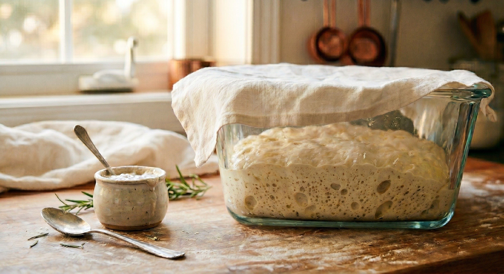
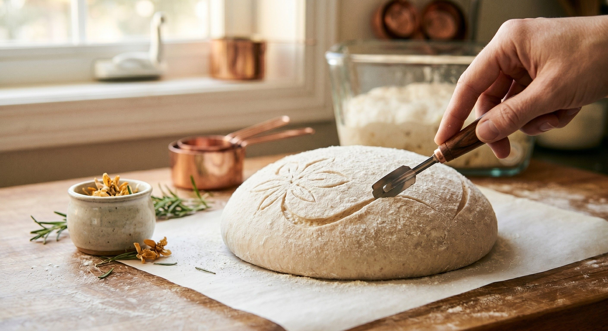

Hand-Shaped in Okotoks

24 Hours of PatienceAt Orange Blossom, we believe that bread should be more than just a side dish—it should be a source of vitality. Commercial bread is made in a rush, but real sourdough requires a 24-hour transformation.
During this slow rise, natural bacteria break down gluten and phytic acid, creating a loaf that is gentle on the gut and rich in bio-available nutrients. Choosing our bread isn't just a culinary choice; it’s a commitment to a healthier lifestyle.

Scoring the Final DesignOur home bakery is fueled by love and the quiet rhythm of the seasons. There are no assembly lines here—only the warmth of the oven and the careful touch of hands that care deeply about the final result.
Every loaf is shaped with a single goal: to bring the comfort of a home-baked meal to your family’s table. We pour our heart into the starter, the knead, and the bake, because we know that real food made with love tastes different.